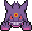

#094 耿鬼Gengar

- 地區
- 關都
- 分類
- 一般
- 特性
- 飄浮
- 身高／體重
- 1.5 公尺／40.5 公斤
- 性別
- ♀ 50% · ♂ 50%
- 捕獲率
- 45
- 基礎經驗值
- 190
- 成長速度
- 較慢
「據說牠會從黑暗中現身，奪走在山中迷路者的性命。」
能力
| 能力 | 種族值 | Lv 100 | Lv 150 | |
|---|---|---|---|---|
| HP | 60 | 690-783 | 1020-1158 | |
| 攻擊 | 65 | 135-166 | 200-246 | |
| 防禦 | 60 | 125-156 | 185-231 | |
| 特攻 | 130 | 265-296 | 395-441 | |
| 特防 | 75 | 155-186 | 230-276 | |
| 速度 | 110 | 225-256 | 335-381 | |
| 合計 | 500 |
Lv 欄是個體值 0–31 的能力範圍（沒有努力值，性格補正為中性）。遊戲內 HP 會再乘以 3，避免即時戰鬥太快結束。升到 Lv 100 所需經驗值合計： 1,059,860，Lv 150： 4,394,235。
進化
 鬼斯通
鬼斯通超級進化

超級耿鬼
- 特性
- 踩影
- 身高／體重
- 1.4 公尺／40.5 公斤
| 能力 | 種族值 | 普通形態 |
|---|---|---|
| HP | 60 | 60 |
| 攻擊 | 65 | 65 |
| 防禦 | 80 | 60 |
| 特攻 | 170 | 130 |
| 特防 | 95 | 75 |
| 速度 | 130 | 110 |
| 合計 | 600 | 500 |
需要：耿鬼達到滿級（Lv 150）+ 10  耿鬼進化石 在背包中。從背包對耿鬼使用石頭；所有石頭都會用完，且形態是永久的。
耿鬼進化石 在背包中。從背包對耿鬼使用石頭；所有石頭都會用完，且形態是永久的。
等級、個體值、招式、異色、攜帶道具與初訓家都維持不變。這個形態的能力、屬性與特性在所有模式（玩家對戰、最後存活、寶可夢戰爭、世界頭目）都會套用。
出現地點與機率
百分比是該地圖、該時段每次生成野生寶可夢時，抽到這一隻的機率。
在霧時更容易遇到（×1.5）。
升級招式
招式光碟（對應招式學習器）
官方招式學習器對應列表：
| 招式 | 屬性 | 分類 | 威力 | 光碟 |
|---|---|---|---|---|
| 迷人 | 一般 | 變化 | - |  一般・少見 一般・少見 |
| 劈瓦 | 格鬥 | 物理 | 75 |  格鬥・稀有 格鬥・稀有 |
| 影子分身 | 一般 | 變化 | - | 一般・少見 |
| 硬撐 | 一般 | 物理 | 70 | 一般・稀有 |
| 真氣拳 | 格鬥 | 物理 | 150 | 格鬥・超稀有 |
| 遷怒 | 一般 | 物理 | 60 | 一般・少見 |
| 終極吸取 | 草 | 特殊 | 60 |  草・少見 草・少見 |
| 覺醒力量 | 一般 | 物理 | 60 | 一般・少見 |
| 破壞光線 | 一般 | 物理 | 150 | 一般・超稀有 |
| 守住 | 一般 | 變化 | - | 一般・少見 |
| 精神強念 | 超能力 | 特殊 | 90 |  精神強念・稀有 精神強念・稀有 |
| 求雨 | 水 | 變化 | - |  水面・少見 水面・少見 |
| 睡覺 | 超能力 | 變化 | - | 精神強念・少見 |
| 報恩 | 一般 | 物理 | 60 | 一般・少見 |
| 碎岩 | 格鬥 | 物理 | 20 | 格鬥・少見 |
| 秘密之力 | 一般 | 物理 | 70 | 一般・稀有 |
| 暗影球 | 幽靈 | 物理 | 80 | 幽靈・稀有 |
| 特性互換 | 超能力 | 變化 | - | 精神強念・少見 |
| 污泥炸彈 | 毒 | 物理 | 90 |  毒・稀有 毒・稀有 |
| 搶奪 | 惡 | 變化 | - |  惡・少見 惡・少見 |
| 怪力 | 一般 | 物理 | 80 | 一般・稀有 |
| 大晴天 | 火 | 變化 | - |  火・少見 火・少見 |
| 挑釁 | 惡 | 變化 | - | 惡・少見 |
| 小偷 | 惡 | 特殊 | 40 | 惡・少見 |
| 打雷 | 電 | 特殊 | 120 |  電・超稀有 電・超稀有 |
| 十萬伏特 | 電 | 特殊 | 95 | 電・極稀有 |
| 無理取鬧 | 惡 | 變化 | - | 惡・少見 |
| 劇毒 | 毒 | 變化 | - | 毒・少見 |
同屬性招式（Ghost/Poison），不在官方列表中：
| 招式 | 屬性 | 分類 | 威力 | 光碟 |
|---|---|---|---|---|
| 驚嚇 | 幽靈 | 物理 | 30 | 幽靈・少見 |
| 怨念 | 幽靈 | 變化 | - | 幽靈・少見 |
| 奇異之風 | 幽靈 | 物理 | 60 | 幽靈・少見 |
| 暗影爪 | 幽靈 | 物理 | 70 | 幽靈・稀有 |
| 影子偷襲 | 幽靈 | 物理 | 40 | 幽靈・少見 |
| 溶解液 | 毒 | 物理 | 40 | 毒・少見 |
| 溶化 | 毒 | 變化 | - | 毒・少見 |
| 十字毒刃 | 毒 | 物理 | 70 | 毒・稀有 |
| 劇毒牙 | 毒 | 物理 | 50 | 毒・少見 |
| 毒瓦斯 | 毒 | 變化 | - | 毒・少見 |
| 毒擊 | 毒 | 物理 | 80 | 毒・稀有 |
| 毒粉 | 毒 | 變化 | - | 毒・少見 |
| 毒針 | 毒 | 物理 | 15 | 毒・少見 |
| 毒尾 | 毒 | 物理 | 50 | 毒・少見 |
| 污泥攻擊 | 毒 | 物理 | 65 | 毒・稀有 |
| 濁霧 | 毒 | 物理 | 20 | 毒・少見 |
| 毒菱 | 毒 | 變化 | - | 毒・少見 |
上表所有升級招式，以及所有一般屬性光碟都可以學習；招牌招式、傳說招式與鎖定招式除外（參見 招式光碟）。光碟只會由野生寶可夢掉落。
打倒後掉落
| 道具 | 稀有度 | 機率 | 數量 |
|---|---|---|---|
 舊布 舊布 | 常見 | 10% | 1 |
 夢之結晶 夢之結晶 | 稀有 | 1% | 1 |
| 幽靈屬性招式光碟 | 少見 | 0.5% | 1 |
| 幽靈屬性招式光碟 | 稀有 | 0.15% | 1 |
| 幽靈屬性招式光碟 | 超稀有 | 0.006% | 1 |
| 毒屬性招式光碟 | 少見 | 0.5% | 1 |
| 毒屬性招式光碟 | 稀有 | 0.15% | 1 |
另外還有依野生寶可夢等級發放的通用掉落（藥品、球等）： 等級掉落表。實際機率會隨等級差、稀有狀態與每日上限改變。
異色
異色機率 1/1024 ，每次野生寶可夢出現時判定（共 10 種配色）。異色寶可夢每一項個體值至少為 20，且全部能力 +5%。